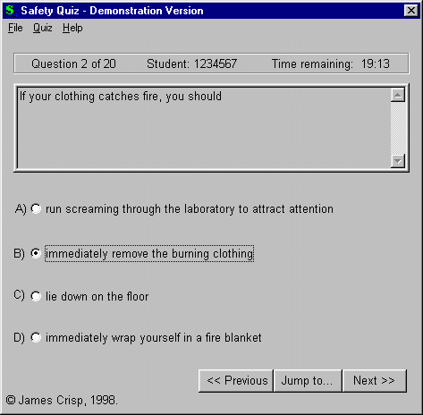

Safety Quiz

Safety Quiz is a versatile multiple choice quiz engine. It was designed to test knowledge of chemical safety. However, it is a completely
customisable progam that can be used to test any subject.
Safety Quiz Engine:
Chooses a predetermined number of questions from a larger database of questions (this means that every quiz is different)
Automatically marks questions and allows questions to be reviewed
Can easily have questions added to its database
Provides access only to authorised users
Records scores in a database
Has a customisable time limit
Has customisable pass mark
Used by the University of New South Wales
Database of Chemical Safety Questions:
Contains over 100 questions and answers
Written by Senior Lecturer at the University of New South Wales who was Safety Officer for 5 years
Used by the University of New South Wales
Sample questions
1. Your eyes are
A) Easily attacked by microbes
B) The most difficult external part of your body to repair surgically
C) Fully protected if you wear spectacles
D) Resistant to cold concentrated solutions of lithium hydroxide
2. Abestos and cigarette smoke
A) Act antagonistically
B) Act synergistically
C) Do not interact in biological systems
D) Both cause primary liver cancers
Safety Quiz is perfect for a university setting. It is designed to assist with
self-based learning and provides an efficient way of testing students.
Prices
| Number of computers | Cost ($Au) |
| 1-20 | $600 |
| 21+ | $25 per additional computer |
Requirements:
Win95/Win98/NT
486 or better computer
If you would like further details, please contact us.